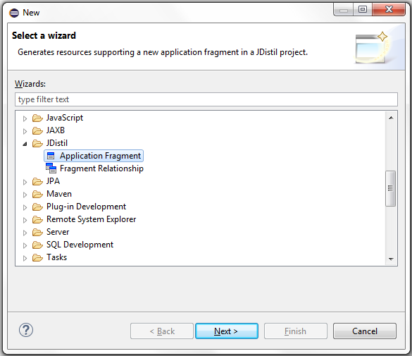
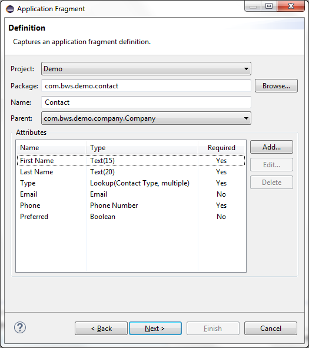
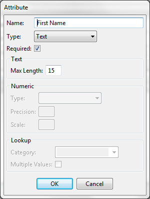
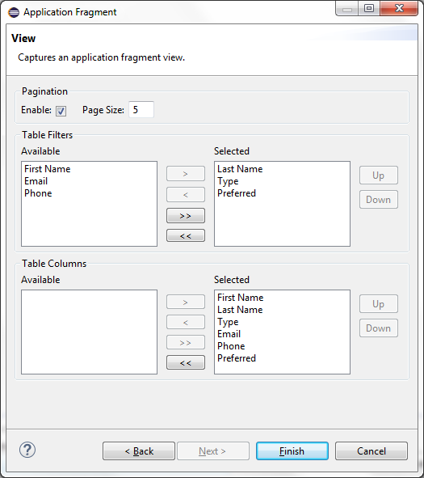
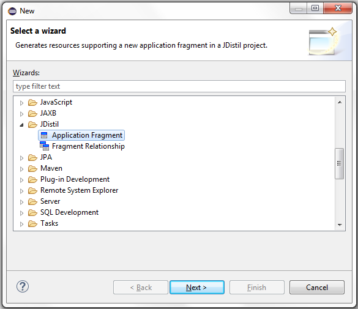
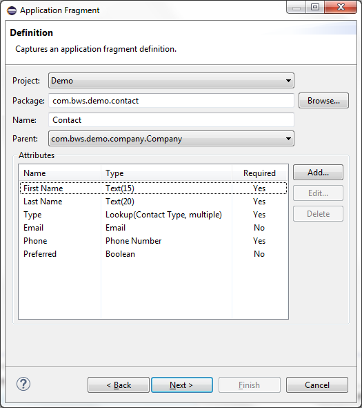
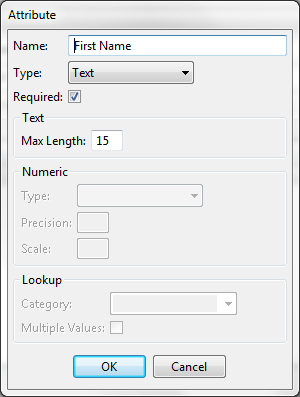
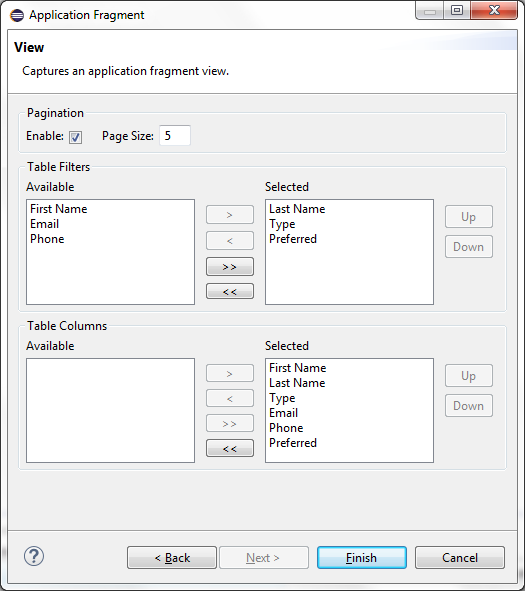

- Configuration information defining all actions, fields, pages, data validation and page navigation.
- Process classes supporting the view, selection, edit, deletion and saving of entity information.
- Domain class representing the entity information.
- DAO class supporting the retrieval and persistence of entity information.
- SQL supporting creation of any defined code lookup categories.
- SQL supporting creation of tables and relationships used to persist entity information.
- SQL supporting creation of entity specific security entitlements.
- JSP page used to filter, sort, delete and page through all defined entities.
- JSP page used to edit entity information.
- JSP page used to select one or more entities from other entity pages.
Application Fragment
The Application Fragment wizard is used to generate application resources supporting CRUD based management of
domain model entity information. This includes the following list of resources.
Fragment Creation
Select the new resource wizard and choose the Application Fragment wizard.

Populate all required fields on the Definition wizard page. Definitions of each field are listed below the screen shot.

Use the add, edit and delete buttons to define and manage attributes of the Application Fragment. Definitions of each field on the attribute entry dialog are listed below the screen shot.

Specify pagination options, select table filters and select table columns used on the view entities page. Definitions of each field are listed below the screen shot.


Populate all required fields on the Definition wizard page. Definitions of each field are listed below the screen shot.

| Field | Description |
|---|---|
| Project | Workspace project where application resources will be generated. |
| Package | Package name to associate with all generated classes. |
| Name | Entity name representing the application fragment. |
| Parent | Existing application fragment defining a unique one to many hierarchical parent child relationship. |
| Attributes | Table of attributes defining the data elements of the application fragment. |
Use the add, edit and delete buttons to define and manage attributes of the Application Fragment. Definitions of each field on the attribute entry dialog are listed below the screen shot.

| Field | Description |
|---|---|
| Name | Attribute name. |
| Type | Attribute type which includes Text, Numeric, Boolean, Date, Time, Lookup, Phone Number, Email types. |
| Required | Required attribute. |
| Text: Max Length | Maximum number of attribute characters. |
| Numeric: Type | Type of numeric attribute which includes Positive, Negative, or Any. |
| Numeric: Precision | Maximum precision of numeric attribute. |
| Numeric: Scale | Maximum scale of numeric attribute. |
| Lookup: Category | Code category of lookup attribute. |
| Lookup: Multiple Values | Multiple value selection supported by lookup attribute. |
Specify pagination options, select table filters and select table columns used on the view entities page. Definitions of each field are listed below the screen shot.

| Field | Description |
|---|---|
| Pagination: Enable | Pagination supported by view entities page. |
| Pagination: Size | Number of items included in table on view entities page. |
| Table Filters | Attributes to be used as table filters on view entities page. |
| Table Columns | Attributes to be displayed in table on view entities page. |
Fragment Resources
The following table documents the project specific resources generated or modified by the Application Fragment wizard.
| Directory | Resource | Description |
|---|---|---|
| src | <base-package>.configuration.ActionIds | Adds fragment specific action ID constants. |
| src | <base-package>.configuration.AttributeNames | Adds fragment specific attribute name constants. |
| src | <base-package>.configuration.CategoryIds | Adds fragment specific category ID constants. |
| src | <base-package>.configuration.Configuration | Adds a reference to the fragment specific configuration class. |
| src | <base-package>.configuration.FieldIds | Adds fragment specific field ID constants. |
| src | <base-package>.configuration.PageIds | Adds fragment specific page ID constants. |
| src | <base-package>.configuration.fragment.<fragment-name>Configuration | Class defining configuration information supporting the application fragment. |
| src | <base-package>.<fragment-name>.<fragment-name>.java | Class defining the domain object representing the application fragment. |
| src | <base-package>.<fragment-name>.<fragment-name>Manager.java | Class defining the DAO object supporting the application fragment. |
| src | <base-package>.<fragment-name>.View<fragment-name-pluralized>.java | Model based process class supporting the ability to view, search, sort, and page through fragment data. |
| src | <base-package>.<fragment-name>.Select<fragment-name-pluralized>.java | Model based process class supporting the ability to view, search, sort, page and select one or more fragments. |
| src | <base-package>.<fragment-name>.Edit<fragment-name>.java | Model based process class supporting the ability to add or edit fragment data. |
| src | <base-package>.<fragment-name>.Save<fragment-name>.java | Model based process class supporting the ability to save fragment data. |
| src | <base-package>.<fragment-name>.Delete<fragment-name>.java | Model based process class supporting the ability to delete fragment data. |
| sql | app-category.txt | Adds fragment specific SQL statements supporting any new code lookup categories. |
| sql | app-entity.txt | Adds SQL statements used to create tables and relationships supporting the application fragment. |
| sql | app-security.txt | Adds SQL statements used to populate security entitlements supporting the application fragment. |
| WebContent | Header.jsp | Adds fragment specific menu item. |
| WebContent/<fragment-name> | <fragment-name-pluralized>.jsp/td> | View entities page supporting the application fragment. |
| WebContent/<fragment-name> | <fragment-name>.jsp/td> | Edit entity page supporting the application fragment. |
| WebContent/<fragment-name> | <fragment-name>Selection.jsp/td> | Select` entities page supporting the application fragment. |